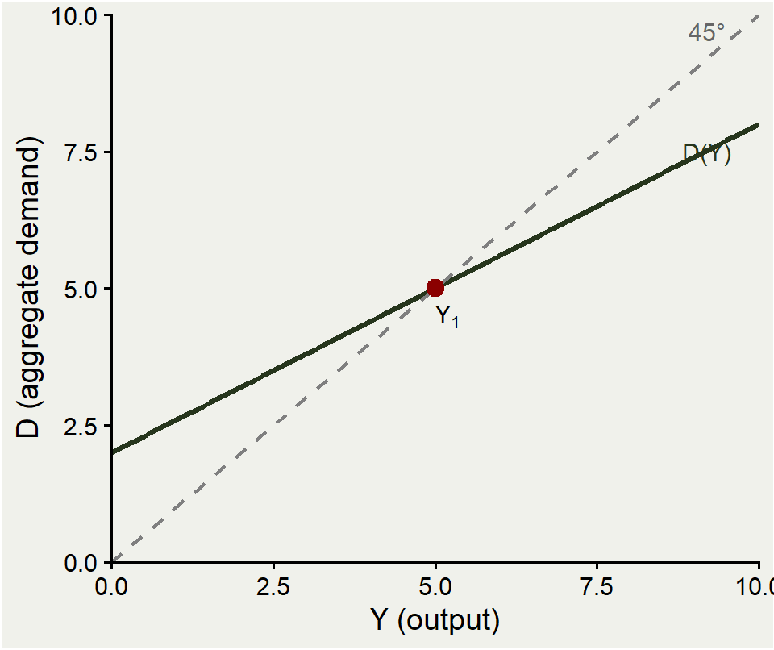
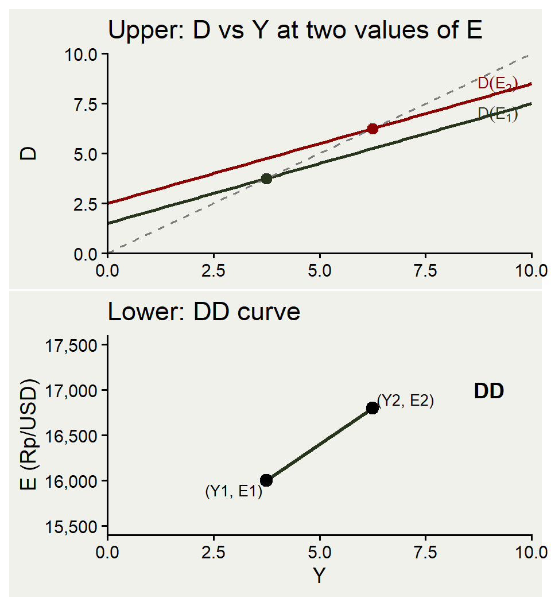
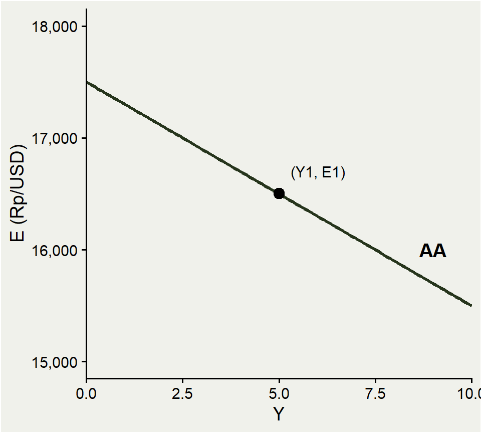
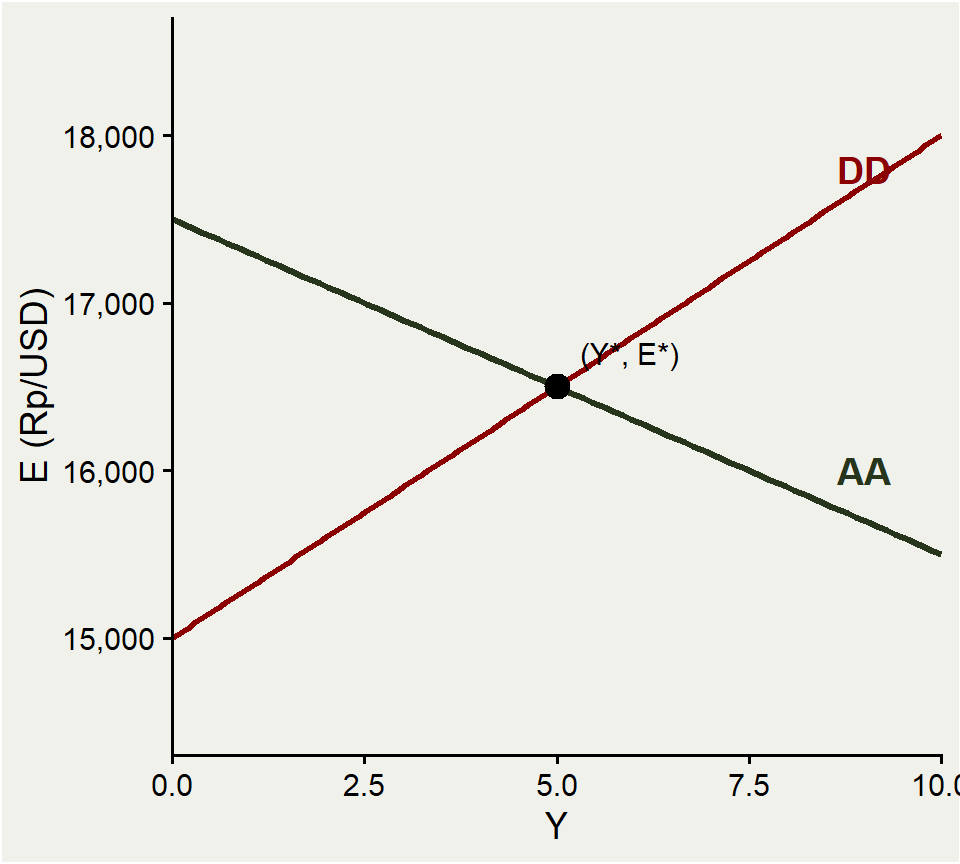
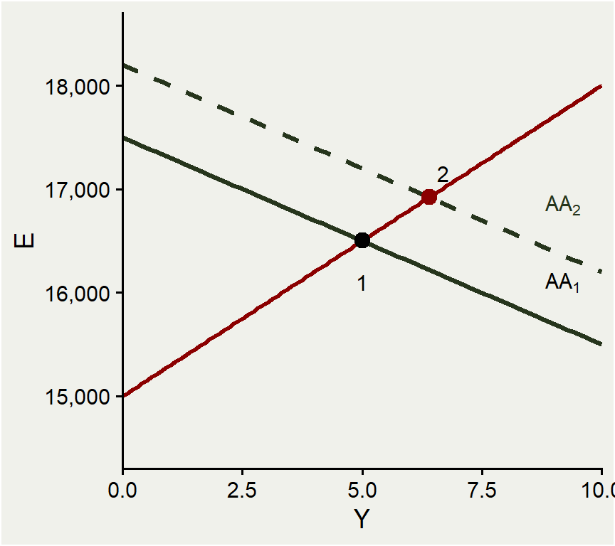
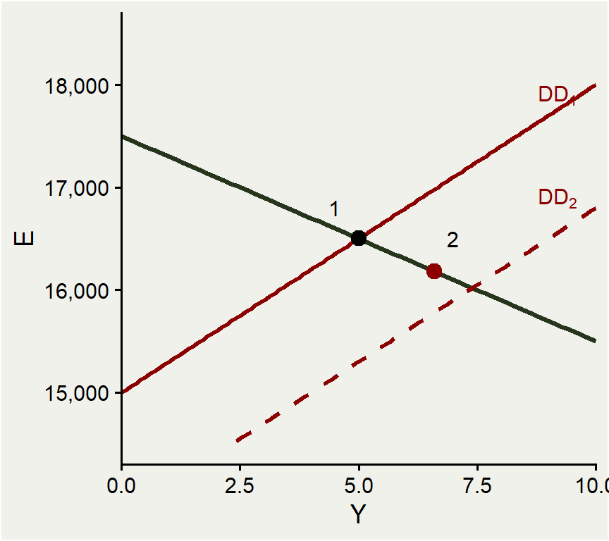
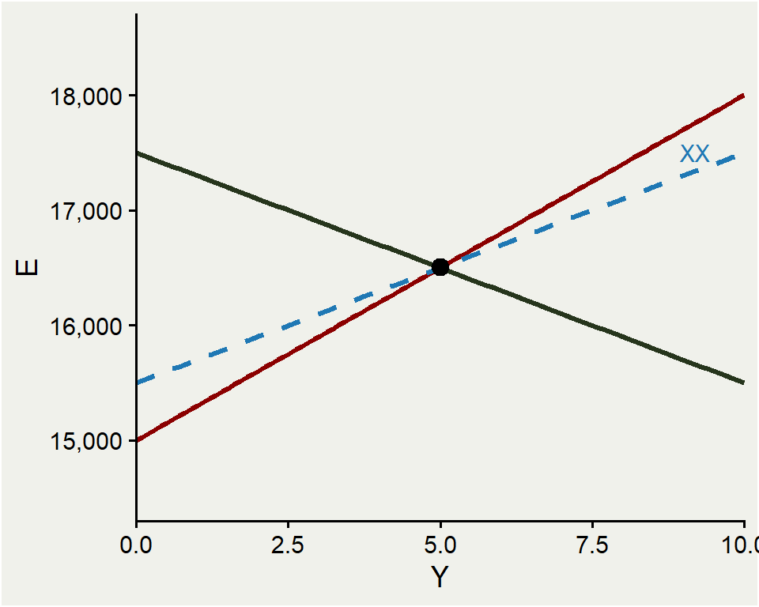
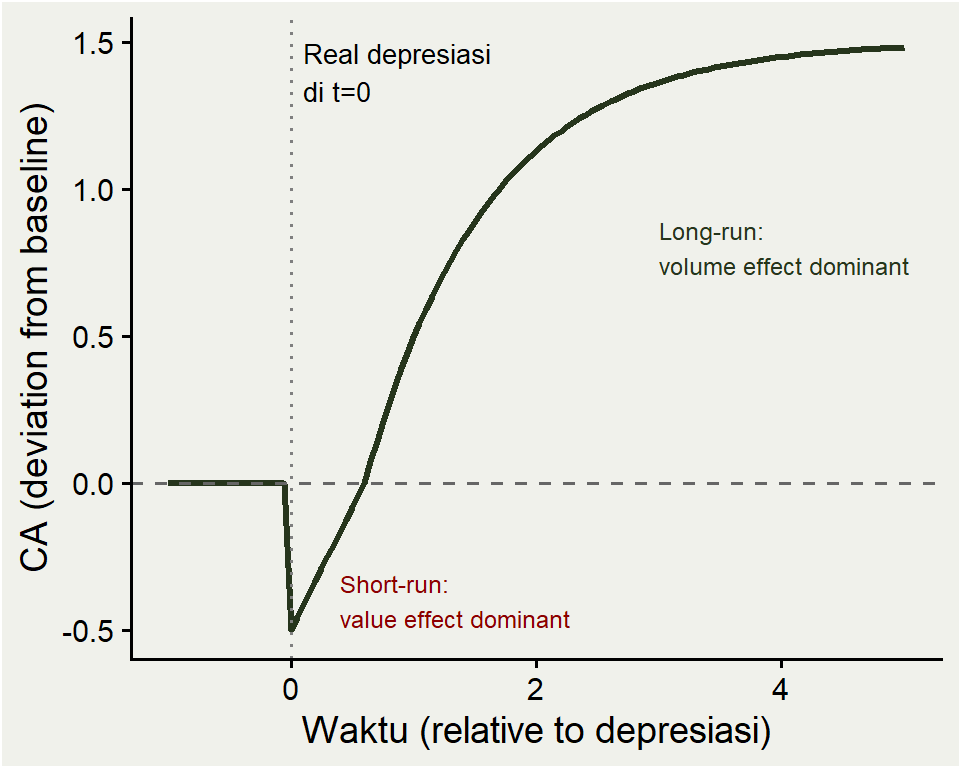

ECES905205 pertemuan 13
2026-06-01
M11: FX market, UIP/CIP, money basics.
M12: money market formal, PPP, monetary approach, real ER, Fisher.
Sejauh ini output \(Y\) kita anggap given.
Hari ini (KOM Ch.17): bawa \(Y\) masuk ke dalam model. Bagaimana output, ER, dan kebijakan moneter/fiskal berinteraksi dalam short run?
Framework baru: AA-DD model.
Block 1: aggregate demand di open economy (\(C + I + G + CA\)).
Block 2: DD curve (output market equilibrium).
Block 3: AA curve (asset market equilibrium).
Block 4: AA-DD intersection = short-run equilibrium.
Block 5: kebijakan moneter & fiskal temporary.
Block 6: kebijakan permanent & long-run adjustment.
Block 7: current account, J-curve, pass-through.
Block 8: liquidity trap (ZLB).
\[ D = C(Y^d) + I + G + CA\left(\frac{EP^*}{P}, Y^d\right) \]
di mana:
- $C(Y^d)$ = consumption sebagai fungsi disposable income.
- $Y^d = Y - T$ = disposable income.
- $I$ = investment (exogen di model awal).
- $G$ = government purchases (exogen).
- $CA$ = current account, fungsi dari real ER dan disposable income.\(C(Y^d)\) tumbuh dengan \(Y^d\), tapi kurang dari proporsional (sebagian disimpan).
MPC (marginal propensity to consume) ≈ 0,6-0,9.
Indonesia: rata-rata household saving rate ~30%, sehingga MPC ~0,7.
KOM asumsi simplifikasi: real interest rate dan wealth diabaikan untuk konsumsi (model dasar).
Jadi consumption hanya bergerak dengan \(Y^d\) dalam analisis kita.
\(CA\) depends on:
Real exchange rate \(q = EP^*/P\): kalau \(q\uparrow\) (real depresiasi), barang domestik relatif lebih murah → ekspor naik, impor turun → \(CA\uparrow\).
Disposable income \(Y^d\): kalau \(Y^d\uparrow\), konsumen beli lebih banyak (termasuk impor) → \(CA\downarrow\).
Table 17.1 (KOM):
| Shock | Effect on \(CA\) |
|---|---|
| \(q\uparrow\) (real depresiasi) | \(CA\uparrow\) |
| \(q\downarrow\) (real apresiasi) | \(CA\downarrow\) |
| \(Y^d\uparrow\) | \(CA\downarrow\) |
| \(Y^d\downarrow\) | \(CA\uparrow\) |
Kenaikan \(q\) (real depresiasi) → ekspor naik, impor turun → CA naik. Tapi ada catatan:
Volume effect: kuantitas ekspor/impor bergerak.
Value effect: harga impor (dalam Rp) naik kalau \(E\) naik → nilai impor per unit naik.
Dalam jangka pendek, volume bisa fixed (kontrak existing) → value effect dominan → CA menurun (bukan naik).
Dalam jangka >1 tahun: volume effect dominan → CA naik.
Ini fenomena J-curve (slide nanti).
Untuk model dasar Ch.17: asumsikan volume dominan → real depresiasi menaikkan CA.
KOM Fig 17.1: \(D\) sebagai fungsi \(Y\) (output).
\(Y\uparrow\) → \(Y^d\uparrow\) → \(C\uparrow\) (positive slope).
\(Y\uparrow\) → impor naik → \(CA\downarrow\) (negative slope).
Net: \(D\) naik dengan \(Y\), tapi dengan slope < 1 (sebagian dari \(Y\) disimpan, sebagian “bocor” ke impor).
45° line: \(D = Y\) → ini equilibrium output market.

Output settles di titik di mana \(D(Y) = Y\) (KOM Fig 17.2).
Di kiri equilibrium: \(D > Y\) → firms boost production → \(Y\) naik.
Di kanan: \(D < Y\) → firms cut production → \(Y\) turun.
Jadi equilibrium adalah stable (mendekati 45° line).
Untuk \(Y\) tertentu, equilibrium tergantung shifts in \(D\): dari \(G, T, I, E, P, P^*\).
\(E\uparrow\) (nominal depresiasi): pada \(P, P^*\) fixed → real ER \(q = EP^*/P \uparrow\) → ekspor naik, impor turun → \(CA\uparrow\).
Karena \(CA\) adalah komponen \(D\) → \(D\uparrow\) pada setiap \(Y\).
Equilibrium output naik.
Jadi \(E\uparrow \Rightarrow Y\uparrow\) (di output market).
Hubungan ini akan jadi dasar DD curve.

Upper panel: di \(E_1 = 16.000\), equilibrium di \(Y_1 = 3{,}75\). Di \(E_2 = 16.800\), equilibrium naik ke \(Y_2 = 6{,}25\).
Lower panel: plot \((Y, E)\) pairs di mana output market clear → titik-titik DD.
DD slopes upward: \(E\uparrow \Rightarrow Y\uparrow\).
Setiap titik di DD = output market in equilibrium.
DD curve: kombinasi \((Y, E)\) di mana output market in short-run equilibrium (\(D = Y\)).
Slopes upward (positive).
Bukan kausalitas — hanya geometric locus.
Implicit: \(G, T, I, P, P^*\) tetap di kurva. Perubahan ini akan shift DD.
| Shock | DD shift |
|---|---|
| \(G\uparrow\) (government spending) | Right |
| \(T\downarrow\) (tax cut) | Right |
| \(I\uparrow\) (investment increase) | Right |
| \(C\) autonom \(\uparrow\) (consumption optimism) | Right |
| \(P\downarrow\) (domestic prices fall) | Right |
| \(P^*\uparrow\) (foreign prices rise) | Right |
| Pergeseran demand ke barang domestik | Right |
Semua factor yang menaikkan \(D\) pada setiap \(E\) → DD geser kanan (lebih banyak \(Y\) pada \(E\) yang sama).
Note: \(E\) sendiri movement along DD, bukan shift.
Indonesia government naikkan \(G\) sebesar Rp 100 triliun (~1% of GDP).
Multiplier sederhana = \(1/(1-MPC+MPI)\), dengan MPC=0,7, MPI=0,2 → multiplier = \(1/0{,}5 = 2\).
Direct effect: \(\Delta Y \approx 200\) triliun pada setiap \(E\).
Pada \(E\) yang sama, DD bergeser ke kanan sebesar Rp 200 triliun.
(Catatan: ini multiplier tanpa asset market response — yang ditangani AA curve nanti.)
Dua asset markets simultaneously:
\[R = R^* + \frac{E^e - E}{E}\]
\[\frac{M^s}{P} = L(R, Y)\]
Dua persamaan, dua unknowns: \(R\) dan \(E\) (dengan \(M^s, P, R^*, E^e, Y\) given).
Bagaimana \(Y\) masuk? Lewat \(L(R, Y)\).
\(Y\uparrow\) → \(L(R, Y)\uparrow\) → demand uang naik.
Pada \(M^s/P\) tetap, \(R\) harus naik untuk re-equilibrate money market.
UIP: \(R\uparrow\) → IDR return curve geser kanan → \(E\downarrow\) (IDR apresiasi).
Jadi \(Y\uparrow \Rightarrow E\downarrow\) (di asset markets).
AA slopes downward.
AA = kombinasi \((Y, E)\) di mana asset markets (FX + money) in equilibrium.
Slope downward: \(Y\uparrow \Rightarrow R\uparrow \Rightarrow E\downarrow\).
Setiap titik di AA = money market clear + UIP holds.
Implicit: \(M^s, P, R^*, E^e\) tetap. Perubahan = AA shift.

| Shock | AA shift |
|---|---|
| \(M^s\uparrow\) (monetary expansion) | Up (right) |
| \(P\downarrow\) (price drop) | Up (right) |
| \(E^e\uparrow\) (expected depreciation) | Up (right) |
| \(R^*\uparrow\) (foreign rate hike) | Up (right) |
| \(L(R,Y)\) shift turun (lower money demand) | Up (right) |
Semua factor yang naikkan \(E\) pada setiap \(Y\) → AA geser ke atas.
Note: kalau \(M^s\) naik, langsung shift AA di asset side; kalau \(G\) naik, langsung shift DD di output side.
AA adjusts instantly: asset prices (termasuk \(E\)) bergerak detik-per-detik.
DD adjusts slowly: output, employment, current account butuh waktu (minggu/bulan).
Implikasi dinamika: kalau ada shock, ekonomi pertama pindah sepanjang AA ke arah equilibrium baru, kemudian perlahan ke perpotongan AA-DD.
KOM Fig 17.9: dari titik arbitrary, \(E\) jump ke AA pertama, lalu output adjust slowly ke titik AA-DD.

Short-run equilibrium = perpotongan AA dan DD.
Di titik \((Y^*, E^*)\):
Output market clear (\(D = Y\), di DD).
Money market clear (di AA, via \(L\)).
UIP holds (di AA, via FX).
Tiga equilibrium kondisi simultan terpenuhi.
Kalau ekonomi tidak di equilibrium, bagaimana ia sampai?
Misal \((Y, E)\) awal di kanan-atas AA dan kanan-atas DD.
Step 1 (instant): \(E\) adjust → jump turun ke AA.
Step 2 (slow): output adjust along AA → \(Y\) turun, \(E\) naik perlahan, sampai perpotongan AA-DD.
Asset markets selalu in equilibrium (di AA); output adjustments slow.
Realistic: financial news menggerakkan FX dalam detik, sementara firm hiring/firing menggerakkan output dalam bulan.
Temporary policy: ekspektasi \(E^e\) tidak berubah. Cukup short-run shifts in \(M^s\), \(G\), dll.
Permanent policy: ekspektasi \(E^e\) berubah (people expect long-run effects). AA shifts lebih karena \(E^e\) ikut bergeser.
Mahasiswa sering bingung: bedanya bukan duration kebijakan, tapi apakah pasar percaya kebijakan berkelanjutan → mempengaruhi \(E^e\).
Mari kita mulai dengan temporary, lalu lihat permanent.

KOM Fig 17.10: BI naikkan \(M^s\) secara temporer.
AA geser ke atas dari \(AA_1\) ke \(AA_2\).
Equilibrium pindah dari titik 1 ke titik 2.
\(E\uparrow\) (IDR depresiasi) dan \(Y\uparrow\) (output naik).
Mekanisme: \(M^s\uparrow\) → \(R\downarrow\) → IDR depresiasi → \(CA\uparrow\) + investment \(\uparrow\) → \(D\uparrow\) → \(Y\uparrow\).

KOM Fig 17.11: pemerintah naikkan \(G\) secara temporer.
DD geser ke kanan.
Equilibrium pindah ke titik 2 (kanan-bawah).
\(Y\uparrow\) tapi \(E\downarrow\) (IDR apresiasi).
Mekanisme: \(G\uparrow\) → \(Y\uparrow\) → demand uang naik → \(R\uparrow\) → IDR apresiasi.
“Crowding out” partial: appresiasi IDR mengurangi net export.
| Policy | \(Y\) | \(E\) | CA |
|---|---|---|---|
| Temporary \(M^s\uparrow\) | Naik | Depresiasi (Rp lemah) | Naik (via depresiasi) |
| Temporary \(G\uparrow\) | Naik | Apresiasi (Rp kuat) | Turun (via apresiasi + impor) |
| Temporary \(M^s\downarrow\) | Turun | Apresiasi | Turun |
| Temporary \(G\downarrow\) | Turun | Depresiasi | Naik |
Monetary expansion: output naik dengan depresiasi; fiscal expansion: output naik dengan apresiasi.
Pilihan mix tergantung target: kalau ER terlalu lemah, prefer fiscal; kalau ER terlalu kuat, prefer monetary.
KOM Fig 17.12: andaikan ada negative demand shock (DD shift kiri) → \(Y\) turun di bawah potensi.
Two restoring options:
Monetary expansion: AA shift kanan → \(Y\) kembali tapi \(E\) lebih tinggi (Rp lebih lemah).
Fiscal expansion: DD shift kanan kembali → \(Y\) kembali, \(E\) kembali ke level awal.
Beda outcomenya di \(E\) — komposisi output (export vs konsumsi domestik) berbeda.
KOM Fig 17.13: kalau shock adalah money demand naik (AA shift kiri); monetary expansion restorasi \(E\) ke awal, sementara fiscal expansion menggeser \(E\) lebih rendah.
Permanent policy: pasar tahu ini bertahan selamanya → \(E^e\) adjusts.
Temporary: pasar tahu ini reversible → \(E^e\) tidak berubah.
Untuk monetary expansion permanent:
Long-run: \(P\) akan naik proporsional, \(E\) akan naik proporsional (PPP).
Jadi \(E^e\) jump ke atas sejak hari pertama.
AA shift lebih dari kasus temporary (dua kontribusi: \(M^s\uparrow\) + \(E^e\uparrow\)).
KOM Fig 17.14: AA jump lebih tinggi dibanding kasus temporary.
Equilibrium short-run: \(Y\) naik lebih, \(E\) naik lebih.
Tapi \(Y\) ini di atas potential output → tidak berkelanjutan.
Long-run: \(P\) naik karena upah tertekan naik (output di atas potensi).
\(P\uparrow\) → \(M^s/P\downarrow\) → AA shift kembali ke level awal.
\(P\uparrow\) → \(q\downarrow\) (real apresiasi) → CA turun → DD shift kiri sedikit.
Long-run equilibrium: \(Y\) kembali ke potensi, \(E\) tetap lebih tinggi (proporsional ke \(M^s\uparrow\)), \(P\) lebih tinggi.
KOM Fig 17.15: dua kurva bergerak over time.
Short-run point: (\(Y\) tinggi, \(E\) jump tinggi).
Long-run point: (\(Y\) kembali ke potensi, \(E\) proporsional \(M^s\) baru, \(P\) proporsional).
Note overshooting (link ke M12): \(E\) jump di atas long-run level karena \(P\) sticky di short-run.
Setelah \(P\) naik perlahan, \(E\) perlahan apresiasi ke long-run level.
KOM Fig 17.16: \(G\) naik permanently.
Effect on DD: shift kanan (seperti temporary).
Effect on AA: shift kiri — karena pasar antisipasi \(Y\) lebih tinggi long-run → \(R\) akan lebih tinggi → IDR akan apresiasi → \(E^e\downarrow\) → AA shift kiri.
Net effect pada short-run \(Y\): nol (kalau ekonomi mulai di full employment).
\(E\) turun (IDR apresiasi).
Mekanisme: kenaikan \(G\) crowds out net exports sepenuhnya. Tidak ada output gain.
“Crowding out” complete dalam permanent fiscal expansion under floating ER.
Mengapa? Karena pasar percaya \(G\) akan permanen → pasar percaya \(E\) akan permanently lebih kuat → \(E\) apresiasi langsung → \(CA\) turun langsung.
Net \(X\) loss = \(G\) gain → no output effect.
Untuk Indonesia: konsekuensinya kebijakan fiscal expansion permanen tidak efektif untuk menaikkan output jangka panjang.
(Berbeda dari temporary fiscal expansion yang menaikkan output sementara.)
Slide praktikal (KOM 47-48):
Inflationary bias: pasar antisipasi monetary expansion → naikkan upah dan harga di awal → output tidak naik tapi inflasi terjadi.
Policy lags: recognition lag, decision lag, implementation lag → kebijakan terlambat efektif.
Data uncertainty: data PDB Indonesia keluar setelah lag 1-2 quarter; data CPI bulanan.
Akademik: full-employment policy lebih mudah di model dibanding praktik.

XX curve: \((Y, E)\) di mana CA = target.
Slopes upward (seperti DD).
Lebih datar dari DD: saving rate channel — kenaikan \(Y\) menaikkan saving lebih banyak dari \(D\), sehingga butuh \(E\) yang lebih kecil untuk mempertahankan CA.
Posisi titik equilibrium relatif terhadap XX:
Di atas XX: CA surplus.
Di bawah XX: CA defisit.
Monetary expansion (AA up): \(Y\uparrow\), \(E\uparrow\). Naik di atas XX → CA improves. Net export channel dominan.
Temporary fiscal (DD right): \(Y\uparrow\), \(E\downarrow\). Turun di bawah XX → CA worsens. Apresiasi + impor naik.
Permanent fiscal (DD right + AA left): \(Y\) tetap, \(E\downarrow\). Di bawah XX → CA worsens.
Implikasi: kalau pemerintah ingin kurangi defisit CA, fiscal contraction efektif. Monetary tightening menguatkan ER → CA bisa memburuk.

J-curve: setelah real depresiasi, CA turun dulu (value effect), baru naik (volume effect).
Bentuk seperti huruf J.
KOM Fig 17.18.
Implikasi:
Short-run: depresiasi memperparah trade balance.
Membutuhkan waktu (~6-12 bulan) untuk volume adjusting.
Untuk Indonesia: setelah depresiasi besar, neraca dagang sering memburuk dulu (impor capital goods Rp naik), baru ekspor manufaktur respond.
Pass-through: %perubahan harga impor (dalam Rp) per 1% perubahan \(E\).
Pass-through 100% (textbook): full transmission, \(P_M^{\text{Rp}}\) naik sebesar \(\Delta E\).
Pass-through < 100% (realitas): firms importir absorb sebagian via margin → harga konsumen naik sedikit.
Empiris Indonesia: pass-through ke harga konsumen ~30-50% jangka pendek (BI riset).
Implikasi: J-curve effect lebih kecil dibanding prediksi textbook karena \(P_M\) tidak naik penuh.
Banyak ekspor Indonesia mengandung import content (bahan baku, komponen).
Contoh: ekspor TPT (Tekstil/Produk Tekstil) Indonesia banyak menggunakan kapas/serat impor.
Kalau IDR depresiasi:
Harga ekspor turun (Rp depresi = USD price lebih kompetitif).
Tapi harga input impor naik (dalam Rp).
Net margin effect kecil → ekspor tidak mudah surge.
KOM slide 67: imported value added bisa 30-50% dari gross value of exports untuk negara open seperti Singapura, Malaysia.
Untuk Indonesia: lebih moderate (~20-30%), tapi tetap mengurangi efek depresiasi.
Kalau \(R = 0\) (Zero Lower Bound, ZLB), CB tidak bisa potong lebih lanjut.
UIP di ZLB:
\[ 0 = R^* + \frac{E^e - E}{E} \quad\Rightarrow\quad \frac{E^e - E}{E} = -R^* \]
Kalau \(R^* > 0\), pasar ekspektasi \(E\) akan turun (\(E^e < E\)).
Jika \(E^e\) fixed, ini implies \(E\) saat ini sudah di atas \(E^e\) — hanya satu nilai \(E\) yang kompatibel.
BI naikkan \(M^s\) di ZLB.
Normalnya: \(R\downarrow\) → \(E\uparrow\). Tapi \(R\) tidak bisa turun di bawah 0!
Hasil: \(E\) tidak naik, \(Y\) tidak naik. Monetary expansion tidak efektif.
AA curve menjadi horizontal pada bagian dimana \(R = 0\) (KOM Fig 17.20).
Solusi alternative: forward guidance (manage \(E^e\) langsung), QE, fiscal expansion.
Great Depression US 1930s: Fed rate hit 0.
Japan 1990s-2010s: BoJ stuck at ZLB selama dekade, eksperimen QE/QQE/yield curve control.
US 2008-2015: Fed funds 0-0,25%, three rounds of QE.
Euro area 2014-2022: ECB hit ZLB, eksperimen negative rates.
Indonesia: belum pernah hit ZLB. BI 7DRR terendah ~3,5% (2021).
Lesson: ZLB lebih relevan untuk advanced economies; EM seperti Indonesia memiliki “policy room” yang lebih besar.
AA-DD model = output + asset market simultaneously dalam short-run.
DD upward: \(E\uparrow \Rightarrow Y\uparrow\) via \(CA\) channel.
AA downward: \(Y\uparrow \Rightarrow R\uparrow \Rightarrow E\downarrow\) via money demand.
Temporary monetary: \(Y\uparrow\), \(E\uparrow\). Temporary fiscal: \(Y\uparrow\), \(E\downarrow\).
Permanent monetary: short-run \(Y\uparrow\) + overshooting; long-run \(Y\) kembali ke potensi.
Permanent fiscal: complete crowding out — \(Y\) tetap, \(E\downarrow\).
J-curve + pass-through < 100% → efek depresiasi pada CA tertunda dan diredam.
Liquidity trap = ZLB → monetary expansion tidak efektif.
Indonesia dalam mild recession, $Y < $ potensi. Pemerintah naikkan \(G\) Rp 50 T (temporary).
Tunjukkan di AA-DD: arah \(Y\) dan \(E\)?
Solusi:
DD shift kanan (G naik → D naik pada setiap E).
AA tetap.
Equilibrium pindah ke kanan-bawah: \(Y\uparrow\), \(E\downarrow\) (IDR apresiasi).
CA turun (apresiasi + Y naik = impor naik).
Tradeoff: stimulus output achieved tapi defisit CA membesar.
BI mengumumkan permanent kenaikan target inflasi dari 3% ke 5% (implies higher \(\mu\) permanently).
Short-run: arah \(E\)? Apakah overshoot?
Solusi:
AA jump lebih tinggi karena \(E^e\) naik (long-run depresiasi expected).
Short-run \(E\) jump melebihi long-run level → overshooting.
\(Y\) naik di atas potensi short-run.
Long-run: \(P\) naik → AA shift kembali, \(Y\) kembali ke potensi, \(E\) settle di level proporsional baru.
Magnitude overshoot tergantung stickiness harga (Dornbusch).
Diketahui: import volume elasticity \(\eta_M = 0{,}6\), export volume elasticity \(\eta_X = 0{,}4\).
Apakah Marshall-Lerner condition holds? Yaitu, apakah real depresiasi eventually memperbaiki CA?
Solusi:
Marshall-Lerner condition (simplified): \(\eta_X + \eta_M > 1\).
\(0{,}4 + 0{,}6 = 1{,}0\). Marginal — exactly at boundary.
Kalau \(> 1\): real depresiasi eventually improves CA (after J-curve).
Kalau \(\leq 1\): depresiasi tidak improve CA bahkan long-run.
Indonesia historis: ML holds, tapi pass-through < 100% memperkecil efek.
Pekan depan: kebijakan moneter & fiskal dengan fixed exchange rate (KOM Ch.18) — Indonesia 1997 BoP crisis.